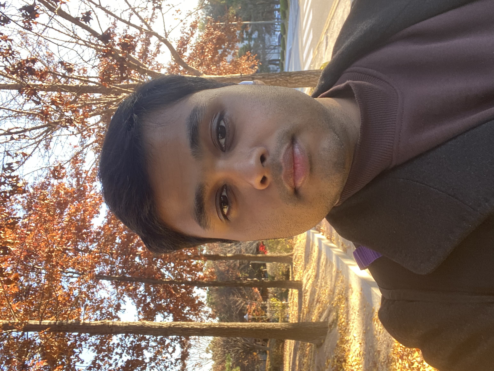
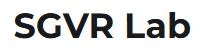
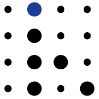

Daeen Kabir
About Me
🎓 KAIST Undergraduate
I’m a 5th-year student at Korea Advanced Institute of Science & Technology (KAIST), majoring in
Computer Science with a minor in Electrical Engineering and AI.
💼 Professional Experience
Formerly an AI Engineer at MolpaxBio, I focused on medical AI imaging. My research spans 3D
computer vision, medical imaging, and low-resource NLP. Currently, I’m working on 3D
segmentation for dynamic scenes.
🤖 Passion & Collaboration
I’m passionate about using AI to solve real-world challenges and am always open to impactful
collaboration opportunities.
🏃♂️ Beyond Academics
In my free time, I like to study quantitative finance 💹, go running 🏃♂️, and enjoy climbing
🧗♂️.
Feel free to reach out for inquiries or collaboration proposals!
Education
KAIST, Korea Advanced Institute of Science and Technology
Aug 2020 - Jun 2025 (Expected Date of Graduation)
B.S. School of Computing (Major)
School of Electrical Engineering (Minor)
Semi-minor in Artificial Intelligence
Work Experience
AI Engineer Intern, MolpaxBio
Dec 2023 - June 2024-
Developed robust models using hospital data for:
- Cancer prognosis and staging classification from whole-slide images.
- Detection and identification of liver cellular structures.
- Generation of realistic lung tissue whole-slide images.
-
Implemented advanced deep learning methodologies:
- Multi-instance learning, self-supervised learning, and feature-bagging for classification.
- YOLO-based models for precise liver structure detection.
- Generative Adversarial Networks (GANs) for synthesizing lung tissue slide images.
-
Delivered high-performance outcomes:
- Classification accuracy and AUC consistently above 90% or even 95% across multiple datasets.
- Mean Intersection over Union (mIoU) of 0.78 for liver structure detection.
- Fréchet Inception Distance (FID) score of 12.97 for generated lung tissue images, indicating high realism.

Undergraduate Researcher, SGVR Lab
July 2024 - Present- Currently leading a project on 3D segmentation of dynamic scenes with diverse motions.
- Conducted research on pose-free sparse-view and dynamic scene reconstruction, using techniques like DUSt3R, MAST3R, and InstantSplat.

Undergraduate Researcher, Users & Information Lab
Sept 2024 - Feb 2025- Developed a benchmark dataset for Bengali linguistics, history, and culture, evaluated top LLMs on it, and led a research paper (under review).
Individual Study Researcher, Multimodal AI Lab
July 2024 - Aug 2024- Worked on text-to-audio generation using latent diffusion models.
- Reproduced results from the AudioLDM paper.
Projects


Awards
National Scholarship Tier 1
Fall 2020 - Fall 2024
Tuition fee and full amount of school support fees supported by Korea Government
Contact Me
daeenkabirdk03@gmail.com
dk2001@kaist.ac.kr
Feel free to reach out for collaboration projects or any inquiries.